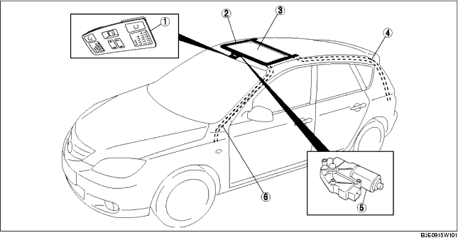

.
|
1
|
Schiebedachschalter
(Siehe SCHIEBEDACHSCHALTER PRÜFEN)
|
|
2
|
Schiebedach
(Siehe SCHIEBEDACH AUSBAUEN/EINBAUEN.)
(Siehe SCHIEBEDACH ZERLEGEN/ZUSAMMENBAUEN.)
|
|
3
|
Glasdach
(Siehe GLASDACH AUSBAUEN/EINBAUEN.)
(Siehe GLASDACH EINSTELLEN.)
|
|
4
|
Hinterer Ablaufschlauch
(Siehe HINTEREN ABLAUFSCHLAUCH AUSBAUEN.)
(Siehe HINTEREN ABLAUFSCHLAUCH EINBAUEN.)
|
|
5
|
Schiebedachmotor
(Siehe SCHIEBEDACHMOTOR AUSBAUEN/EINBAUEN.)
(Siehe SCHIEBEDACHMOTOR PRÜFEN.)
|
|
6
|
Vorderer Ablaufschlauch
(Siehe VORDEREN ABLAUFSCHLAUCH AUSBAUEN.)
(Siehe VORDEREN ABLAUFSCHLAUCH EINBAUEN.)
|